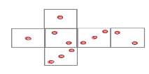
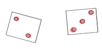
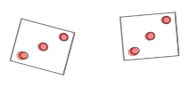
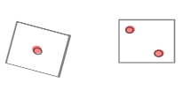

Chapter 1 Random events and probability - a short review
Probability theory describes random events such as:
- throwing a certain number when rolling a die,
- having a positive return in a portfolio of stocks in future,
- default chance of a borrower
- customer behavior (the odds of clicking on an advertisement)
- …
In this chapter we review how to:
- model random events using probabilities,
- calculate and interpret different kinds of probabilities: marginal, joint, and conditional ones
- determine whether two events are independent or not
We use the following simple example to recall the basics of randomness and probability.
Example 1.1 (rolling two dice with faces 1,2,3) We conduct the experiment “rolling two fair dice with the faces 1, 2 and 3 on two sides of each die”.

Different outcomes are possible:
  
Since we do not know the outcome prior to conducting the action, it is a random process or a random experiment, which outcomes we observe at the end.
1.1 Outcomes and Events
Normally when modelling a random process, we are interested in certain outcomes of interest, which can be numbers, or more complex objects. An outcome is a complete description of the end state of a random process, in the sense that everything we are interested in can be defined in terms of a single outcome denoted as \(\omega\). All possible outcomes are gathered in the sample space \(\Omega.\)
Example 1.2 (Outcomes and Sample space in rolling the dice twice) Example 1.1 cont.
The outcomes of rolling the dice with faces 1,2,3 can be defined as a pair of two numbers \((a,b)\) describing the faces shown as a result of the first (\(\color{red}a\)) and of the second (\(\color{blue}b\)) die: \[(\color{red}2,\color{blue}3); (\color{red}3,\color{blue}3); (\color{red}1,\color{blue}2); \ldots\]
Sample space (the collection of all possible outcomes): \[\begin{align*} \Omega &= \{(1;1), (1;2), (1;3), (2;1),\ldots, (3;3)\}\\ &=\{(a,b) | a,b\in \{1; 2; 3\}\}, \end{align*}\] where \(a=\text {result of the 1st throw}\) and \(b=\text {result of the 2nd throw}\)
The cardinality (the number of elements) of \(\Omega\) is: \[|\Omega| = \text{possibilities}^\text{number of repetitions} = 3^2=9.\]
Sometimes we are interested in a single outcome, but most of the time we favor a couple of outcomes with a certain property. For example, if we play a board game, where you win if you get the same number twice (outcomes \((1,1); (2,2); (3;3)\)) or the sum of the faces is greater than four (outcomes \((2,3); (3,2); (3;3)\)). Therefore, we define events which are sets of outcomes that we are interested in. We can think of an event as either:
- A subset of the sample space
- A statement that is either true or false
These two concepts are equivalent, though the subset concept makes the math clearer.
Example 1.3 (Possible events in rolling the dice twice) Example 1.2 cont.
Events:
- \(A=\)“The numbers on both dice are the same”: \[A=\{(a,b)\in \Omega | a=b\} =\{(1;1), (2;2), (3;3)\}\]
- \(B=\)“The numbers on both dice are odd”: \[B=\{(a,b)\in \Omega | a, b \text{ odd}\} =\{(1;1), (1;3), (3;1), (3;3)\}\]
- \(A\cup B=\)“The numbers on both dice are the same and /or the numbers are odd”: \[A\cup B=\{(a,b)\in \Omega | a=b \text{ or } a,b \text{ odd }\} =\{(1;1), (1;3), (2;2), (3;1), ( 3;3)\}\]
\(A\cap B=\)“The numbers on both dice are the same and odd”: \[A\cap B=\{(a,b)\in \Omega | a=b \text{ or } a,b \text{ odd }\} =\{(1;1), ( 3;3)\}\]
\(C=\)“The sum of both faces is four”: \[C=\{(a,b)\in\Omega| a+b=4\} =\{(1,3); (2,2); (3,1)\}\]
Beside the set operations \(\cup\) and \(\cap\) in example 1.3, it is useful to state further possible relations between events, such as:
- A complement \(A^c\) of an event \(A\) contains all possible outcome from \(\Omega\) which are not contained in \(A.\)
- The complement of the event “The numbers on both dice are odd” is the event “At least one number is even”.
- The complements of the event “The numbers on both dice are the same” is the event “The numbers on both dice are different”
- Two events are disjoint (\(A\cap B=\emptyset\)) if they share no outcomes.
- The events “The numbers on both dice are odd” and “The numbers on both dice are even” are disjoint.
- An event \(A\) implies another event (\(A\subset B\)) if all of its outcomes are also in the implied event \(B.\)
- The event “The numbers on both dice are even” implies the event “The sum of both dice is four”.
All events for which a probability can be calculated are summarized in the event space \(\mathcal F\).
Formally \(\mathcal F\) is a set of subsets of \(\Omega\), i.e. a subset of the power set \(\mathcal P(\Omega)\) (the set of all subsets).
For a finite and countable set of outcomes, one usually chooses \(\mathcal F=\mathcal P(\Omega)\), since this event space then contains all events that can be defined for the random experiment at hand.
1.2 Probabilities
Event probabilities quantify the uncertainty associated with the outcome of a random experiment. The probability measure assigns a number between \(0\) and \(1\) to each event.
For \(\omega\in\Omega\) the map is called \(\omega\mapsto\mathbb P(\omega)\) probability measure. For an event \(A\in \mathcal F\), the probability of \(A\) is equal to the sum of the probabilities for the outcomes contained in \(A\): \[\mathbb P(A) = \sum _{\omega \in A } \mathbb P(\omega).\]
Any probability measure must satisfy Kolmogorov’s axioms:
- \(\mathbb P(A)\geq 0\),
- \(\mathbb P(\Omega )=1\),
- If \(A\cap B=\emptyset\), then \(\mathbb P(A\cup B)=\mathbb P(A)+\mathbb P(B)\).
Laplace’s probability model
With \((\Omega, \mathcal F,\mathbb P)\) there is a Laplace model if the following conditions are met:
The sample space \(\Omega\) is finite and all outcomes are equally probable.
The power set \(\mathcal P(\Omega)\) is chosen as the event space, i.e. every subset \(A\subseteq \Omega\) is an event.
The probability of an event \(A\in \mathcal F\) is then calculated by \[\begin{equation*} \mathbb P(A) = \frac{|A|}{|\Omega|} = \frac{\text{Number of outcomes favorable for $A$ to occur}} {\text{Number of all possible outcomes}} \end{equation*}\]
Example 1.4 (roll the dice twice) Examples 1.1 and 1.2 cont.
In this experiment, the sample space is finite, the outcomes are equally likely and we can choose the power set of \(\Omega\) as the event space. Consequently, the Laplace’s probability model can be applied here.
\[\begin{align} \mathbb P(A) &= \frac{|A|}{|\Omega|}=\frac 39 = \frac 13,\\ \mathbb P(B) &= \frac{|B|}{|\Omega|}=\frac 49. \end{align}\]
Finite probability spaces
The triple \((\Omega,\mathcal F,\mathbb P)\) is a finite probability space if the following conditions are met:
The result set \(\Omega\) is finite.
The power set \(\mathcal P(\Omega)\) is chosen as the event set.
The individual probabilities \(\mathbb P(\omega)\) of all outcomes \(\omega\in\Omega\) are non-negative and add up \(1\).
The probability of an event \(A\subseteq \Omega\) is then calculated by \[\begin{equation*} \mathbb P(A) = \sum _{\omega\in A} \mathbb P(\omega) = \text{Sum of all function values} \mathbb P(\omega)\text{ with } \omega\in A. \end{equation*}\]
Example 1.5 (Sum of two dice) Examples 1.1 and 1.4 cont.
If we are interested in the resulting sum of two dice instead of the resulting two numbers, the new probability space is:
- \(\Omega = \{2;3;4;5;6\}\) (Why?),
- \(\mathcal F=\mathcal P(\Omega)\): we still choose the power set as the event space,
- \(\mathbb P\):
\[ \begin{array}{c|ccccc}\omega_i&2&3&4&5&6\\\hline \mathbb P(\{\omega_i\})&\frac 19&\frac 29&\frac 39&\frac 29&\frac 19 \end{array} \]
In this new experiment, the sample space is still finite and the event space is the power set of \(\Omega\). Still, the outcomes are not equally likely. Consequently, the general finite probability space applies here.
For the events \(S_{>4}\): “The sum of the numbers is greater than 4” and \(S_{even}\): “The sum of the numbers is even” applies:
\[\begin{align} \mathbb P(S_{>4}) &= \mathbb P(\{5\}) + \mathbb P(\{6\}) = \frac 13,\\ \mathbb P(S_{even}) &= \mathbb P(\{2\}) + \mathbb P(\{4\}) + \mathbb P(\{6\})=\frac 59. \end{align}\]
Calculating with probabilities
The following properties of \(\mathbb P\) hold in general models and facilitate the calculation of probabilities for complex events:
\(\mathbb P(\emptyset)=0\)
\(A\subseteq B\) \(\Rightarrow\) \(\mathbb P(A)\leq \mathbb P(B)\) and \(\mathbb P(B\setminus A)= \mathbb P(B)-\mathbb P( A)\)
\(\mathbb P(A^c) = 1-\mathbb P(A)\)
\(\mathbb P(A\cup B) = \mathbb P(A) + \mathbb P(B) - \mathbb P(A\cap B)\)
Example 1.6 (Sum of two dice) Example 1.5 cont.
- \(\Omega = \{2;3;4;5;6\}\),
- \(\mathcal F=\mathcal P(\Omega)\): we still choose the power set as the event space,
- \(\mathbb P\):
\[ \begin{array}{c|ccccc}\omega_i&2&3&4&5&6\\\hline \mathbb P(\{\omega_i\})&\frac 19&\frac 29&\frac 39&\frac 29&\frac 19 \end{array} \]
- For \(S_{>2}\):“The sum of two dice is greater than 2” applies:\[S_{>4}\subset S_{>2}.\] Hence with rule 2:
\[\mathbb P(S_{>2}\setminus S_{>4})=\mathbb P(S_{>2}) - \mathbb P(S_{>4}) =\frac 89 - \frac 13 =\frac 59.\]
\(S_{>4}^c = S_{\leq 4}\): “The sum of two dice is smaller or equal to 4” holds (rule 3): \[\mathbb P(S_{\leq 4})=\mathbb P(S_{>4}^c)=1-\mathbb P(S_{>4}) = 1 - \frac 13=\frac 23.\]
For \(S_{>4}\cap S_{even}\): “The sum of two dice is greater than 4 and even” applies: \[\mathbb P(S_{>4}\cap S_{even}) = \mathbb P(\{6\}) = \frac 19.\]
For \(S_{>4}\cup S_{even}\): “The sum of two dice is greater than 4 or even” applies (rule 4): \[\mathbb P(S_{>4}\cup S_{even}) = \mathbb P(S_{>4}) + \mathbb P(S_{even}) - \mathbb P(S_{>4}\cap S_{even}) = \frac 13 + \frac 59 - \frac 19 = \frac 79.\]
Joint and conditional probabilities, independence of events
Joint probabilities
The joint probability of two events \(A\) and \(B\) is the probability that both happen:
\[\mathbb P(A\cap B).\]
Example 1.7 (Joint probabilities for two dice) Examples 1.4 and 1.5 cont.
Consider the events:
- \(S_4=\)“The sum of the dice numbers is four”
- \(B=\)“The dice numbers are both odd”
\[\mathbb P(S_4\cap B) = \mathbb P(\{(1,3); (3,1)\}) = \frac 29.\]
Joint probabilities are just probabilities, so they obey all of the axioms and rules of probability.
Conditional probabilities
The conditional probability of an event \(A\) given another event \(B\) is defined as:
\[\mathbb P(A|B) = \frac{\mathbb P(A\cap B)}{\mathbb P(B)} = \frac{joint~probability}{probability~of~the~given~event}.\]
The conditional probability answers the question: if we already know that \(B\) is true, what are the chances that \(A\) is true?
Example 1.8 (Conditional probabilities for two dice) Example 1.7 cont.
Consider the events:
- \(S_4=\)“The sum of the dice numbers is four”
- \(B=\)“The dice numbers are both odd”
\[\mathbb P(S_4|B) = \frac{\mathbb P(S_4\cap B)}{\mathbb P(B)} = \frac{\frac 29}{\frac 49} = \frac 12.\]
Independence of events
If we assume that certain events are unrelated to each other, we say that the two events
are independent. Formally, \(A\) and \(B\) are independent, if their joint probability is just the two individual probabilities multiplied together:
\[\mathbb P(A\cap B) = \mathbb P(A)\cdot \mathbb P(B).\]
This definition is based in the premise, that the conditional probability corresponds to the simple probability, if the two events are unrelated:
\[\begin{align}\mathbb P(A|B) &= \mathbb P(A)\Leftrightarrow\\ \frac{\mathbb P(A\cap B)}{\mathbb P(B)} &= \mathbb P(A)\Leftrightarrow\\ \mathbb P(A\cap B) &= \mathbb P(A)\cdot {\mathbb P(B)} \end{align}\]
Example 1.9 (roll the dice twice) Example 1.8 cont.
In the experiment with rolling two fair dice, the defined events \(S_4\) and \(B\) are dependent, since:
\[\begin{align} \mathbb P(S_4\cap B) &=\frac 29\not = \frac 13\cdot\frac 49. \end{align}\]
So, \(S_4\) and \(B\) are dependent. The same can be deduced from \(\mathbb P(S_4|B)=\frac 12\not=\frac 13=\mathbb P(S_4)\).
Now try to calculate some probabilities yourself! Please round your asnwers to four decimal places!
1.3 Sampling as a random process
Now we will look at (somewhat simplified) examples of how sampling can be modeled as a random process.
Example 1.10 (Random selection of customers) We first reconstruct the sampling mechanism in a simplified form.
Suppose we have a total of \(5\) customers (denoted as \(x_1\) to \(x_5\)) and select \(3\) customers randomly and independently (we “put” the drawn customers back into the customer pool before we choose the next one, i.e. one and the same customer can appear multiple times).
How can one describe this random selection with an appropriate probability space?
The sample space (\(\leadsto\) \(\Omega\)): Outcomes are sample realizations or sample outcomes. \[\begin{align} \Omega &=\{(x_1,x_1,x_1),(x_1,x_2,x_2), \ldots, (x_1,x_2,x_3), \ldots, (x_5, x_2,x_4), \ldots, (x_5,x_5,x_5)\}\\ |\Omega|&=5^3 = 125. \end{align}\]
Event space (since \(\Omega\) is finite \(\leadsto\) the power set):
\[ \mathcal F = \mathcal P(\Omega). \]
Probabilities: every outcome is equally likely (we draw with replacement), i.e. \[\mathbb P(\{(x_i,x_j,x_k)\} = \frac 1{|\Omega|} = \frac 1{125}.\] So Laplace’s probability model applies.
For \(A\): The combination of certain customers 1, 2 and 3 is selected (in different order), \(A = \{(x_1,x_2,x_3),(x_2,x_1,x_3),\ldots,(x_3,x_2,x_1) \}\)) we have \(|A|=3!\) (permutations) and \[\mathbb P(A) = \frac{|A|}{|\Omega|} = \frac 6{125}.\]
For \(B\): Customer 1 is randomly selected at least once, \(B = \{(x_1,x_1,x_1),\ldots, (x_5,x_1,x_2),\ldots, (x_5,x_5,x_1)\},\)) we have \(\mathbb P(B) = 1-\mathbb P(B^c)\) with \(|B^c|=4^3 = 64\) (selecting out of four possibilities \(x_2,x_3,x_4\) or \(x_5\) three times.): \[\mathbb P(B) = 1-\frac{|B^c|}{|\Omega|} = \frac {61}{125}.\]
For operational questions, it is less interesting which customers are specifically selected, but rather what characteristics they have. That’s why we’re modifying our modeling by looking at the specific feature “use of app or web interface”.
Example 1.11 (Random selection of customers: app vs web) Example 1.10 cont.
Assume that the distribution among the \(5\) customers looks like this:
\[ \begin{array}{c|ccccc}\hline Customer~i&1&2&3&4&5\\\hline Usage~a_i&App&Web&App&App&Web\\\hline \end{array} \] That is, \(\mathbb P(App) = 0.6\) und \(\mathbb P(Web)=0.4.\)
What are the different sample outcomes, that we can draw, and what is their probability?
- Sample space: \(x_i\) gets the corresponding values (e.g. \(x_1=App\), \(x_2=Web\))
\[\begin{align} \Omega &= \{(App; App; App), (App; Web; Web),\ldots, (App; Web; App),\ldots, \\ &~~~~(Web; Web; App),\ldots,(Web; Web; Web) \}\\ |\Omega|&=5^3 = 125. \end{align}\]
Event space: \(\mathcal F=\mathcal P(\Omega).\)
Probability measure: equal probabilities
Events:
\(A_3=\) “all three selected customers are app users”: only customers 1, 3 and 4 may be selected \(\leadsto\) \(|A_3|=3^3=27\) and \[\mathbb P(A_3)=\frac{27}{ 125}.\]
\(A_0=\) “all three selected customers are web users”: only customers 2 and 5 may be selected \(\leadsto\) \(|A_0|=2^3=8\) and \[\mathbb P(A_0)=\frac{8}{125}.\]
\(A_1=\) “only one of the selected customers uses the app”: one place is occupied by customer 1, 3 or 4 (three cases times three possible placements); two other places - by customers 2 or 5 (select out of two possibilities two times) \(\leadsto\) \(|A_1|=3\cdot 3\cdot 2^2=36\) and \[\mathbb P(A_1)=\frac{36}{125}.\]
\(A_2=\) “two of the selected customers use the app” \(\leadsto\) \(\mathbb P(A_2)=1-\mathbb P(A_2^c) = 1-(P(A_0) + P(A_1) + P(A_3)) = 1-\frac{71}{125} = \frac{54}{125}.\)
What do you expect on average (across all sample results)? (Sum over the possible values for the number of app users multiplied by their probability.)
\[ 0\cdot \frac{8}{125} + 1\cdot \frac{36}{125}+2\cdot \frac{54}{125}+3\cdot \frac{27}{125} = 1.8 \] or as a share \(\frac{1.8}{3}=0.6\) \(\leadsto\) on average we have the same share (60%) of app users as in the entire customer base!
Sometimes two or more features are of interest: in our example it will be the “Number of orders” which we now model in the context of an additional feature “Usage of app or web interface”. What happens when a sample with respect to the both characteristics is taken?
Example 1.12 (Orders and Usage) Here too, let’s simplify things a bit and assume that we already know the joint probabilities. Now we randomly select user accounts and determine how many orders were made and via which system (app or web) they were made.
What different sample results and with what probability can we draw?
- Sample space:
\[\begin{align} \Omega &= \{(App; 1), (App; 2),\ldots, (App; 6),\ldots, \\ &~~~~(Web;1),\ldots,(Web; 6) \}\\ |\Omega|&=2\cdot 6=12. \end{align}\]
Event space: \(\mathcal F=\mathcal P(\Omega).\)
Probability measure: (assuming we know the joint probabilities):
\[ \begin{array}{c|cccccc} \mathbb P((a_i,b_i))&b_1=1&b_2=2&b_3=3&b_4=4&b_5=5&b_6=6\\\hline a_1=App&0.02&0.06&0.12&0.2&0.12&0.08\\ a_2=Web&0.08&0.09&0.13&0.05&0.03&0.02\\ \end{array} \]
Events:
\(A_1 =\) Orders via app \(\leadsto\) \[\begin{align}\mathbb P(A_1)&=\mathbb P((App;1),\ldots,(App;6)) =\\&~~0.02 + \ldots + 0.08 = 0.6.\end{align}\]
\(B_{\geq 3}=\) Min. 3 orders \(\leadsto\) \[\begin{align}\mathbb P(B_{\geq 3})&=\mathbb P((App;3),\ldots,(App;6),(Web;3),\ldots,(Web;6 )) =\\&~~0.12 + \ldots + 0.08 + 0.13 + \ldots + 0.02 = 0.75.\end{align}\]
\(A_1\cap B_{\geq 3}=\) Min. 3 orders via app \(\leadsto\) \(A_1\cap B_{\geq 3}=\{(App;3),(App;4),(App;5),(App;6)\}\) \[\begin{align}\mathbb P(A_1\cap B_{\geq 3})&=\mathbb P((App;3),(App;4),(App;5),(App;6)) = \\&~~0.12 + 0.2 + 0.12 + 0.08 = 0.52.\end{align}\]
When analyzing customer characteristics, it is often necessary to model probabilities conditioned on certain other characteristics. For example, if it is known that a randomly selected customer uses the app, how many orders per month could you expect from that customer?
Example 1.13 (Orders and Usage) Example 1.12 cont.
We assume that we already know the joint probabilities.
What is the distribution of the number of orders among app users?
- Result set:
\[\begin{align} \Omega &= \{(App; 1), (App; 2),\ldots, (App; 6),\ldots, \\ &~~~~(Web;1),\ldots,(Web; 6) \}\\ |\Omega|&=12. \end{align}\]
Event space: \(\mathcal F=\mathcal P(\Omega).\)
Probability measure: (assuming we know the joint probabilities)
\[\begin{equation} \begin{array}{c|cccccc} \mathbb P((a_i,b_i))&b_1=1&b_2=2&b_3=3&b_4=4&b_5=5&b_6=6\\\hline a_1=App&0,02&0,06&0,12&0,2&0,12&0,08\\ a_2=Web&0,08&0,09&0,13&0,05&0,03&0,02\\ \end{array} \tag{1.1} \end{equation}\]
Events:
\(A_1 =\) Use of the app: \[\begin{align}\mathbb P(A_1)&= 0,6.\end{align}\]
\(B_{i}=\) number of orders \(=i\) \(\leadsto\) \[\begin{align}\mathbb P(B_{i})&=\mathbb P((App;i),(Web;i)):\end{align}\] \[ \begin{array}{c|cccccc} i&1&2&3&4&5&6\\\hline \mathbb P(B_i) &0,1&0,15&0,25&0,25&0,15&0,1 \end{array} \]
\(A_1\cap B_{i}=\) \(i\) Orders via app \(\leadsto\) \(A_1\cap B_{i}=\{(App;i),(App;i),(App;i), (App;i)\}\) \[\begin{align}\mathbb P(A_1\cap B_{i})&=\mathbb P((App;i)).\end{align}\] \(\leadsto\) first line in (1.1).
Conditional distribution of \(B_i\) given \(A_1\) is (\(\mathbb P(B_i|A_1 = \frac{\mathbb P(A_1\cap B_{i})}{\mathbb P(A_1)}\)): \[ \begin{array}{c|cccccc} i&1&2&3&4&5&6\\\hline \mathbb P(B_i|A_1) &0,0333&0,1&0,2&0,3333&0,2&0,1333 \end{array} \]
So what average number of orders do we expect from an app user?
\[ 1\cdot 0,0333 + 2\cdot 0,1 + 3\cdot 0,2 + 4\cdot 0,3333 + 5\cdot 0,2 + 6\cdot 0,1333 = 3,9663 \]
…and from a web user?
Exercise 1.1 (average number of orders)